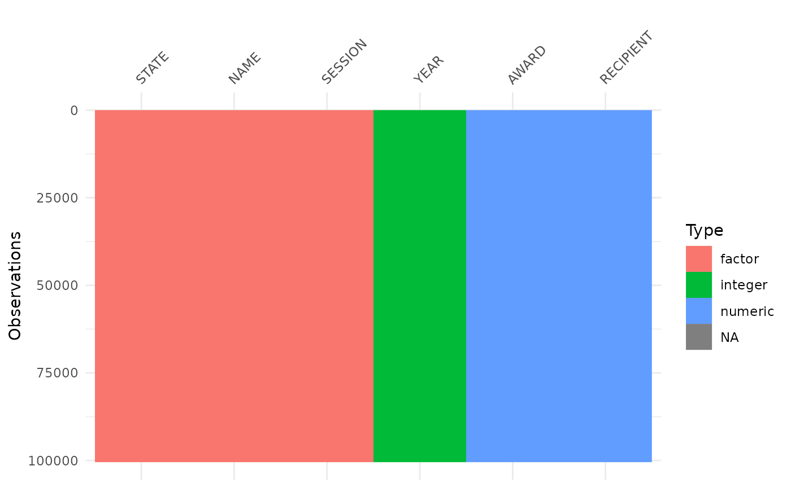
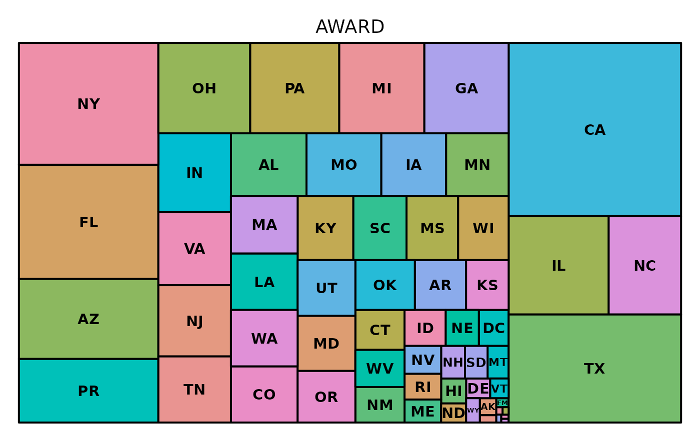

The pell R package contains two datasets that we believe are a viable alternative to Anderson’s Iris data (see datasets::iris). In this introductory vignette, we’ll highlight some of the properties of these datasets that make them useful for statistics and data science education, as well as software documentation and testing.

Installation
You can install the released version of pell from CRAN with:
install.packages("pell")Or install the development version from GitHub with:
install.packages("devtools")
devtools::install_github("Curious-Joe/pell")The pell package
This package contains one dataset called - pell. Take a glimpse at the data:
dplyr::glimpse(pell)
#> Rows: 100,474
#> Columns: 6
#> $ STATE <fct> AK, AK, AK, AK, AK, AK, AL, AL, AL, AL, AL, AL, AL, AL, AL, …
#> $ AWARD <dbl> 197232.9, 133148.0, 107287.0, 3425148.8, 2441864.0, 353170.0…
#> $ RECIPIENT <dbl> 109, 69, 72, 1920, 1256, 221, 2369, 837, 3236, 854, 2842, 16…
#> $ NAME <fct> "Alaska Pacific University", "Alaska Vocational Technical Ce…
#> $ SESSION <fct> 1999-00, 1999-00, 1999-00, 1999-00, 1999-00, 1999-00, 1999-0…
#> $ YEAR <int> 1999, 1999, 1999, 1999, 1999, 1999, 1999, 1999, 1999, 1999, …The pell::pell data contains 100470 complete cases, with 4 missing values.
visdat::vis_dat(pell)
Highlights
Without going much into the details, here are few code snippet to get you started with the pell dataset. You can check out more in vignette("examples").
Exploring factors
The pell data has three factor variables:
pell %>%
dplyr::select(where(is.factor)) %>%
dplyr::glimpse()
#> Rows: 100,474
#> Columns: 3
#> $ STATE <fct> AK, AK, AK, AK, AK, AK, AL, AL, AL, AL, AL, AL, AL, AL, AL, AL…
#> $ NAME <fct> "Alaska Pacific University", "Alaska Vocational Technical Cent…
#> $ SESSION <fct> 1999-00, 1999-00, 1999-00, 1999-00, 1999-00, 1999-00, 1999-00,…Get the top 10 states with the highest median Pell grant record:
# Top 10 institutions with the highest pell grant disbursements
pell %>%
dplyr::group_by(STATE) %>%
dplyr::summarise(
Median = median(.data$AWARD, na.rm = TRUE)
) %>%
dplyr::arrange(desc(Median)) %>%
head(10) %>%
knitr::kable(caption = "Top 10 States with the Highest Median Grant Distribution")| STATE | Median |
|---|---|
| FM | 8787878 |
| AS | 4181457 |
| AL | 3067752 |
| MS | 2989801 |
| MH | 2826818 |
| GU | 2706895 |
| VI | 2388619 |
| PW | 2206829 |
| NC | 2113618 |
| MP | 1920043 |
Get a treemap of all the states based on their total paid out grant dollars:

More
If you are a Python user, you may find interest in checking a dash app that I created earlier using the same data. Check out the app repository here.
I will try to put some more R examples in vignette("examples") but currently it’s not populated.
So keep an eye on that or do you own analysis and contribute your own!
Package citation
Please cite the pell R package using:
citation("pell")
#>
#> To cite package 'pell' in publications use:
#>
#> Hossain A (2022). _pell: Data About Historic Pell Grant Distribution
#> in the US_. https://github.com/Curious-Joe/pell,
#> https://curious-joe.github.io/pell/.
#>
#> A BibTeX entry for LaTeX users is
#>
#> @Manual{,
#> title = {pell: Data About Historic Pell Grant Distribution in the US},
#> author = {Arafath Hossain},
#> year = {2022},
#> note = {https://github.com/Curious-Joe/pell,
#> https://curious-joe.github.io/pell/},
#> }Have fun with the pell grant data!
Thanks to the palmerpenguins package for their great vignette. I used the vignette from that package as a skeleton and populated this vignette with relevant contents. A big shout out to them and a heartfelt thank you 🙏